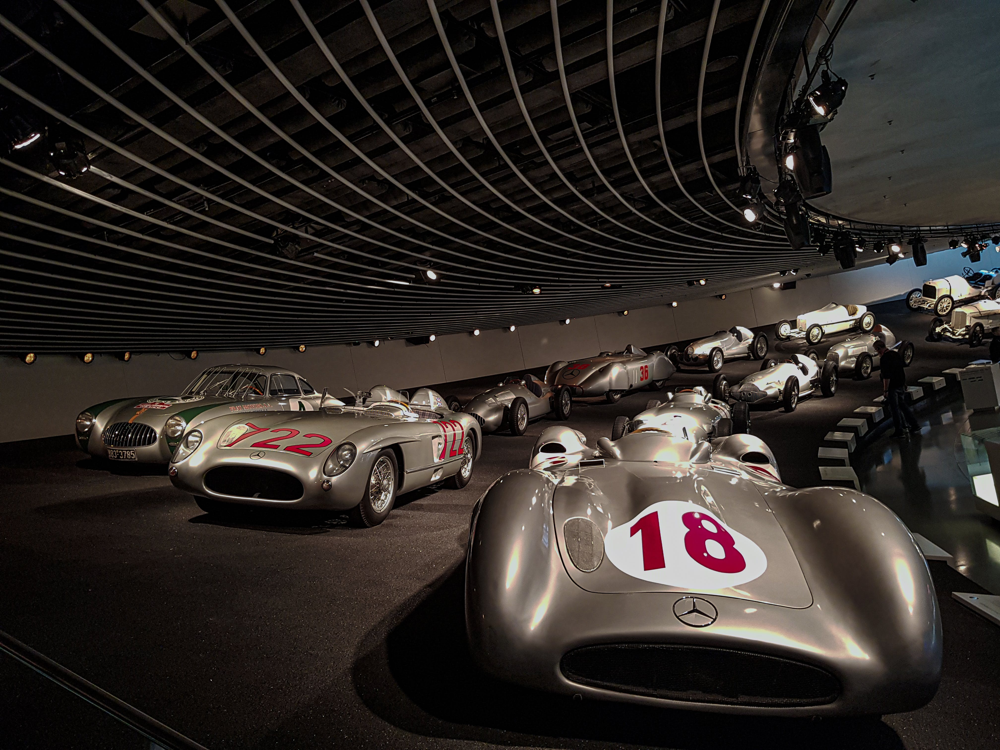
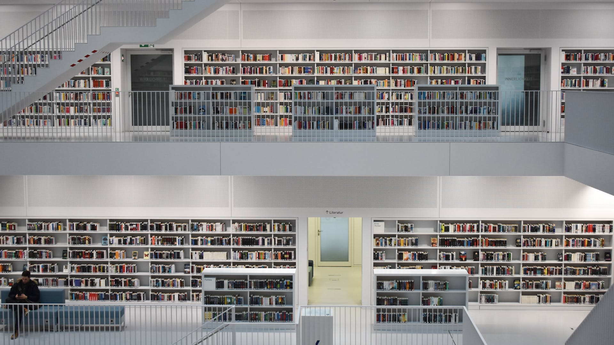

<div class="container mt-2">
    <div id="customCarousel" class="carousel slide">
        <div class="carousel-inner">
            <div class="carousel-item active">
                
                <h5 class="image-location">Feuer See</h5>
            </div>
            <div class="carousel-item">
                
                <h5 class="image-location">Max Eyth See</h5>
            </div>
            <div class="carousel-item">
                
                <h5 class="image-location">Schlossplatz</h5>
            </div>
            <div class="carousel-item">
                
                <h5 class="image-location">Mercedes Museum</h5>
            </div>
            <div class="carousel-item">
                
                <h5 class="image-location">Stadt Bibliothek</h5>
            </div>
        </div>
        <div class="carousel-controls-custom">
            <button id="prevButton" class="btn btn-default">
                <i class="bi bi-arrow-left"></i>
            </button>

            <button id="pauseButton" class="btn btn-default">
                <i class="bi bi-pause-circle"></i>
            </button>

            <div id="carouselIndicatorsCustom" class="carousel-indicators-custom"></div>

            <button id="nextButton" class="btn btn-default">
                <i class="bi bi-arrow-right"></i>
            </button>
        </div>
    </div>
</div>